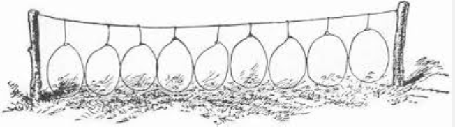
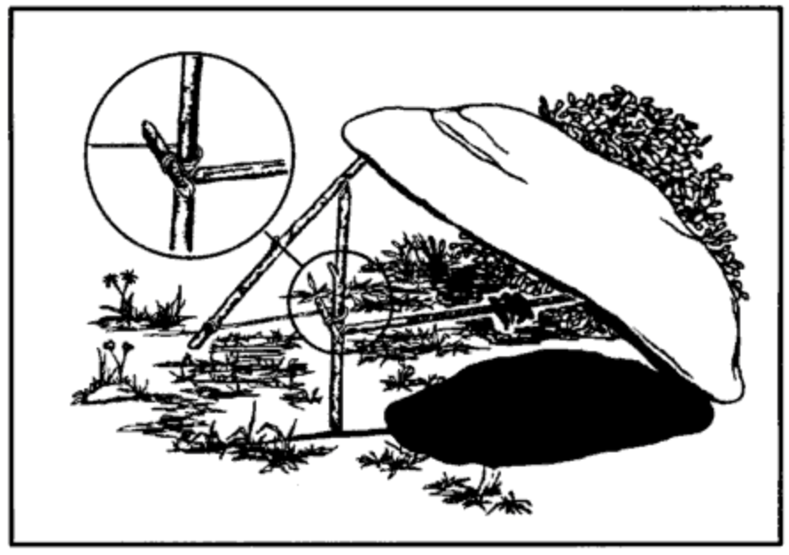

How To Find Food
What? You're hungry? Yeah I bet you are hungry. Especially if you have been hiking, got lost, have been in an accident that left you stranded, or any other situation that puts you away from civilization for an extended period of time. Not to worry though. There are many places in the wild to find nourishment.
Plants
There are many plants in the wild that are edible and many that are not and could really harm you or kill you. If you cannot "absotively posolutely" identify the plant that you are about to ingest...don't. Here is a list of some things that you might want to avoid. Some edible plants may have some of these characteristics but this is a good starting point if you don't have a clue.
Avoid Plants That Have:
- Milky sap
- Discolored sap
- Spines
- Thornes
- Soapy or bitter taste
- Three leaves
If you have the means and the time, you can perform the Universal Edibility Test.
Protein
Plants can get you by for a while but I'm no vegetarian. I don't know about you but I need to get some protein before long. You could try the Bear Grylls way...
I'd prefer not to eat bugs for my primary source of protein so dont forget small animals.
You can set snares.
You can set a simple deadfall.
Just make sure you have your fire and your shelter built so that when you get some food you have a place to prepare it to eat.